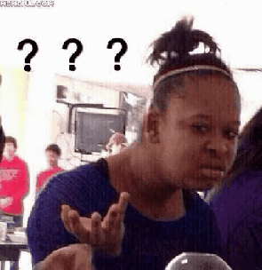
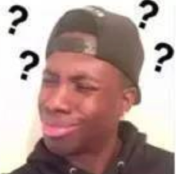

按”>”键开始 click → to start
Supported by Hakimel and Newshell Updatetime：07/07/2019
典型课堂场景1
“同学们知道是什么连读吗？”
“知道！就是a lo to f”
“不错，还有吗？”
“额，好像是of可以变成əv..？”
典型课堂场景2
“三大从句句型？？”
“状语从句，宾语从句，还有啥来着…..”
典型课堂场景3
“老师老师，能不能跟我讲讲同位语从句和插入语的区别啊？？”

问题解读：
1.如果说到连读只想到琐碎的应用实例还算说的过去，那么把弱读和连读混为一谈就很不应该了。
2.不按照成体系的方法记忆几大基本从句类型，肯定经常容易混淆和漏记
3.能提出这种问题的同学，一定是根本就没有搞懂这两种结构本身各自的定义，就开始试图搞清区别。
就像你根本就不认识你的两个同学就试图去进行区分他们，怎么可能？对这两类句型定义清楚的同学肯定是不会问出来这种问题的。
今天同学们学习英语的条件是十分便捷的，比如
如果你想知道任何一个细节的语法知识点，你只要使用搜索引擎就一定可以找到答案
效率甚至远远高于向老师询问
但是，为什么很多同学的英语水平依然还停留在中学的
说到不定式就是Make sb to do sth，提笔就是 With the development of society
这就是学习的碎片化导致的： 只见树木，不见森林
所有的知识信息都是一座座孤岛，举目四望便是汪洋大海茫茫一片，互相不能联通，谈何举一反三。
因此，就算把效率最高的搜索引擎给你，最全的数据库，最厚的语法书给你
你依然不知道自己该学点啥。
因此，我总结出了这本Learning in systematic way, 以指导同学们进行系统且模块化的学习，以期有所帮助。
在重读的开音节中元音字母按字母名称读音,在重读的闭音节中元音字母读做指定短元音
| 绝对开音节 | 单个发音的元音字母后面没有辅音字母的音节。 | 例如：no she he we me hi |
| 相对开音节 | 单个元音字母后加一个或者一个以上的辅音字母(r除外），再加一个不发音的字母e构成的音节 | 例如：name these bike home excuse like five,exer-cise， satel-lite，name， these， bike， home， excuse， like，ape，ice |
| 闭音节 | 指的是以一个或几个辅音音素结尾(以r结尾称为r音节，但在过去式、过去分词以及现在分词的双写规则中与闭音节作相同处理)，而中间只有一个元音音素的音节 | sit/sit/，film/film/, pen/pen/，dog/dɔg/，map/mæp/，desk/desk/，apple/ˈæpl/ |
| a | 在开音节中[ei] name plane Jane baby cake | 在闭音节中 [æ] bag dad hat map black back |
| e | 在开音节中 [i:] he these me Chinese | 在闭音节中 [e] bed let pen desk yes egg |
| i | 在开音节中 [ai] bike fly drive time nice kite | 在闭音节中 [i] fish big drink sit milk swim |
| o | 在开音节中 [əu] those close go hoe home no | 在闭音节中 [ɒ] clock not box shop sock |
| u | 在开音节中 [ju:] student excuse duty Tuesday | 在闭音节中 [ʌ] bus cup jump much lunch |
People don’t speak English word by word, 3 skills are indispensable
| 意义
|
英文的抑扬顿挫(intonation)，最重要的便是由重读体现。
|
|---|---|
| 如何重读 | ◦ Time - lower, longer 长
◦ Tone- stress(higher in pitch) 高 ◦ Volume-louder 响 |
| 重音与次重音符号 | 重读重音符号后的音节
achieve /ə‘tʃiv/ adhere /əd'hɪr/ congratulation[kən,ɡrætʃu‘leʃən] extracurriculum [,ekstrəkə'rikjuləm] information ['ɪnfɚ'meʃən] |
| 重读位置 | 1.单音节：
无重读/全重读: 相对：要重读的音节，对比非重读音节， 能够加以区分。 •◦ Bag, book, club，beef，meat |
| 2.双音节
•前名： Country, brother, window, •后动： import，present，object，produce，project，record |
|
| 3.多音节：重读倒数第三音节。
三音节-第一音节,四音节-第二音节,五音节-第三音节 ◦ family, political, organize, phenomenon |
|
| 4. -tion,sion结尾的：重读tion之前的音节
◦ organization, station, pronunciation, revision，oversimplification |
| 弱读可以有多弱？ | 查看故事： One small step for a man. A giant leap for mankind. |
|---|---|
| 弱读类型 | 1.长元音变短元音 Me /mi:/ /i/ 2.失去爆破（吞音） 3.SCHWA 4.缩读contraction: gonna wanna 5.H 的省略 |
| 弱读核心 | Schwa（非中央（重读strees）音节元音） |
| Schwa步骤 | 1.划分音节 2.找重读音节 3.非重读音节变Schwa 4. 变为中元音/ ə / |
功能词弱读： Preposition for /for/ //fər / This is for you As /əz / From He is far from home. at/ət/ they’re at work that/ / To they went to school of/əv/ I drink cup of tea. Conjunctions and/ən/ It goes up and down. or/ər/Did he say yes or no? Because /kəz/ Why? B/C I say so. Helping verbs Is /əz/ /z/ /s/ He’s studying Has/əz/ /z/ /s/ He’s studied. Do/də/ How do you do? are [ɑr] / ər / Are you kidding? Will /l/ we’ll talk to him Can/Cən/ Have/həv/ Articles A/ I made a mistake An /Do you want an apple? The/ The moon is shining Pronouns You /What do you want? Your /what’s in your bag? Our This is our house He /hi/ /i/ Is he here yet? Him /Him/ /im/ I gave him a present. Her /he*r/ /e*r/ I gave her a present. Them /e*m/ we talk to them 单词弱读 Behind Between Below Behind Office Chicago Impossible 词组弱读 We are/wər/ You are They are 句子练习 It’s not as easy as you think It’s no ta se sy as you think At noon, we'll stop working and eat lunch. Do you think he's making them a cup of tea? I'm going to the beach because it's a sunny day. How far is it from San Diego to San Francisco? Bob had a cup of coffee with cream and sugar A cup of coffee The end of the day A couple of days Cream and sugar/ coke and fries.
Contractions are very common in speaking, but we don't write them this way in academic or business writing only in very casual notes or emails.
| Going to | gonna | Gonna to go Gonna to have a lunch *we don't change going to to gonna when it's part of the main verb, as in I‘m going to the supermarket.* |
| Want to wants to | wanna, wanste | Do you wanna to have lunch? I want to eat with my colleagues. He wants to become a doctor. He wanste become a doctor. |
| Kind of Sort of a lot of Lots of | kinda Sorda Alota Lotsa | Learning pronunciation is kind of like playing tennis. It's sort of hard at first, but then it gets easier. Becoming an expert takes alota practice. |
| Have to,Has to | hafte,haste | We have to study He has to study. Does your sister have to take a test? Yes, she has to take a math test. I have to take that test too. |
| Would have,Could have,Should have | woulda,coulda,shoulda | If we'd known, we could have made reservations. You should reminded me earlier. If I'd gotten up earlier, I would have been on time. |
| Comprehensive practice | I want to live where it's kind of warm all year. Are you going to tell Bob he has to help us? If I could have made it, I would have been there. Lots of people have to wear glasses. | |
| 浊化意义 | 浊化既清辅音变浊辅音的发音现象 |
| 浊化三规则 | 1.前有S 2.后有元音 3.非重读音节 |
| 例子 | p:speak, spit, sport, spade, spark t:stay, steal, still, star, story k:sky, ski, skate, school, scold |
| 1.升调 Rising Tone⤴： | 意义：是一个期待回答和表示未完待续的语调，希望引起注意。 1.一般疑问句（期待回答） 2.举例子（未完待续，进行自我补充） |
| 2.降调Falling tone⤵： | 意义：表示强调，回答和结束。 1.特殊疑问句 2.回答疑问 3.命令句与陈述句 |
| 3.降升调 ⤵⤴ F&R Tone： | 表示转折 |
| 举例子： | I need eggs⤴, pasta sauce⤴，garlic⤴，and butter⤵. |
| 一般疑问句： | Can you help me? could you come to my office.please? would you mind putting out your cigarette? Do you like her? |
| 命令句与回答句： | Go to the grocery store for me⤵. Yeah, I like her⤵，Why do you know her⤵? |
| 特殊疑问句 | How are you⤵/How are you doing? ⤵/What’s going on? ⤵/what’s up? Where did you spend your vacation⤵? Roma⤵. Was it expensive⤴? Yeah, very⤵. when are they planning to go home? why did you decide to become a teacher? |
| 选择疑问句： | is it sunny⤴ or rainy⤵? would you rather watch tennis⤴ or soccer⤵? would you like coffee⤴,tea⤴, or water⤵? |
| 附加疑问句： | Your name is Ann, isn't it⤴?(I really don't know) Your name is Ann, isn't it⤵?(I am sure you'll say yes) |
| 综合练习： | How many legs does a spider have? Do spiders lay eggs? Which has more legs, a spider or an ant? Do spiders make good pets? Some spiders are poisonous, aren't they? |
| 意义 | To make long sentences easier to say and understand, break them up into phrase groups. |
| 划分规则 | connect words with one meaning into same group，at least one stress every phrase groups . |
| 例子 | John went shopping and he spent a lot of money John went shopping /and he spent /a lot of money He got a watch for his father a laptop for his mother and a novel for his son. He got a watch for his father/ a laptop for his mother /and a novel for his son. ◦ I’m afraid you’ve made a mistake ◦ They changed the schedule at the end of April ◦ I’ve been waiting for ages |
| 类型 | 规则 | 例子 |
|---|---|---|
| 1.True T，真/t/ | 1.词汇开头 2.重读音节 3.c-t/l-t | Fact Melt Equipment temple Task |
| 2.Held T(失去爆破t) | 1.位于词汇末尾 2.位于音节末尾 3.成阻，失爆 | Apartment ，outside，Cut，can’t/ can |
| 3.Flap T，闪音T | 1. 元音之间,必须前后都是（或者/r/），/t/变成/d/ 2.不是一个强力的浊辅音/d/，发音要轻 3.l之前 | Water=wader Better City Little ['lɪtl] shorten， a par do f= a part of what is it=wha di si? But I- bu di? see you late Thirty/Forty/eighty |
| 4.Glottal T （声门）T | 1. 音标/t/+/n/之前发生Glottal Stop 2. t发成一个鼻音很重的“/n/”音 | Certain ['sɝtn] mountain [ˈmaʊntn] cotton ['kɑtn] Britain ['brɪtn] lighten ['laɪtn] eaten [itn] |
| 5.Vanishing T | 出现规则：/n/+/t/ | Internet ['ɪntɚnɛt] Printer ['prɪntɚ]，Twenty['twɛnti] integer['ɪntɪdʒɚ] |
| 类型 | 规则 | 例子 |
|---|---|---|
| ed | 1.Unvoiced+ed 做后缀时，如果前面是清辅音,发清辅音/t/ | Helped Asked Finished Cooked Worked stopped |
| 2.Voiced consonants/Vowel+ed 做后缀时，如果前面是浊辅音和元音,发音/d/ | Cleaned Played Prepared | |
| 3.T,d+ed,发音/id/ | Limited,Painted,Started,Visited | |
| t | 1.Unvoiced consonants+s,发音清辅音/s/ | Maps,Cakes,Roofs,Cups |
| 2.Voiced consonants/Vowels+s 做后缀时，如果前面是浊辅音和元音,发音/z/ | Is ,days,Music,Husband,reason | |
| 3. /s/,/z/,/ʃ/,/ʒ/,/tʃ/,/dʒ/,发音/iz/ | Horses，Dishes，Surprises，boxes |
can和can't是听力做题过程中最为常见和难以区分的词对，因为can‘t的尾音t经常被省略 Problem：Can, and the negative contraction, Can't, People don't usually pronounce these words clearly
| Can | 常见发音/kən/ | Can is usually unstressed, and it sounds like /kən/, with a reduced vowel. When can is alone, with no verb after it, it’s stressed as /Kæ/ |
| Can't | 常见发音 /kæn/ | Can't is usually stressed. It sounds like /kænt/ with a clear sound. |
| 例子 | Can /kən/ you help me? Yes I can/kæn/. Eagles can fly, but penguins can’t Can ostriches fly? No, I don’t think they can. Eagles can fly, but they can’t live in ocean. Can’t you tell me more about birds? No, I can’t. | |
Problem：numbers ending in -teen and -ty. These are often very hard to tell apart, even for native speakers. There are two different ways to tell them apart.
| Two ways to distingguish | 1. Stressed-syllable. Teen will be stressed in the second syllable, ty will be stressed in the first syllable. However,when people count, eg.Thirteen, fourteen, fifteen, sixteen, seventeen, they will stress in the 1st syllable. 2. The difference of /t/ sound |
| 13 thirteen [‘θə:’ti:n] 为什么不是 [‘θə:’di:n] ? 14 fourteen['for’tin] 15 fifteen ['fifti:n] 16 sixteen ['siks'ti:n] 17 seventeen[,sevən'ti:n] 18 eighteen ['ei'ti:n] 19 nineteen [,nain'ti:n] | 30 thirty ['θə:ti] = thirdy 40 forty['fɔ:ti] = fordy 50 fifty['fifti] =fifty 60 sixty['siksti]= siksdy 70 seventy=seveny 80 eighty['eiti]= eidy 90 ninety[’nainti]= nainy |
| example | We need sixteen chairs for the meeting. My aunt was born in nineteen seventy. This book costs $30.15. How many people will come to the meeting at 2:40? |
It‘s one part of connected speech. A way that words are joined together whenever people speak. We don't say words separately like beads on a string. Instead, words are like magnets that stick together so that you can hardly tell where one ends, and the next one begins. 规则：1.属于同一意群 2.非重读 3.跟语速无关
| 类型 | 规则 | Eg. |
| 1.辅音+辅音 | 1.两个辅音相同时，甚至相似时（同类型），两个辅音合并成为一个辅音，重心靠后 2.结尾是爆破音时，直接失去爆破 | Pual Likes swimming Short time/This school/With the Enough friends He always seems so happy. This city has a fine, new library. What time do you think Katy will be here? Big turtles move very slowly. I have a big kitchen. I eve bi ‘kitchen. I wish she would talk to me I want to play badminton |
| 2.辅音+元音 | 直接拼读 | a lot of /What if/I’m an actor John is a friend of mine I had to wait a while before my job interview. I can't think of an idea for a new product. The teachers and students were all enthusiastic. We speak liaison every day, they are all around us. |
| 3.元音+元音 | 1. /e/, /i/(前元音)结尾 加 /j/ 2./u:/, /ɔ:/（后元音） 结尾加/w/ 3./ə/（中元音）,特征：出现字母r,结尾加/r/ 4.前后元音相同时，直接拼读 | Play around ,I appreciate you Two hours No anwers(no wanswer) Doing Dowing Why is she so afraid of it Whiz se so wa frai do fi t? the answer is (answer ris) mother in law where is it? There is a huge store in the city Go over |
| 4.同化现象 | /d/+/j/=/dʒ/,/t/+/j/=/tʃ/ /s/+/j/=/ʃ/, /z/+/j/=/ʒ/ | Would you /I had your book./Did you know that? What did you think of that concert? Can’t you /Nice to meet you You lost your keys/I know what you mean I bet you miss your brother, don’t you? I will miss you/ The bus usually comes on time Is your homework done/Don’t raise your hand |
典型问题：老师这个句子太长了呀我只听他*&……%？就过去了啥也没听到？？  针对目标人群：零基础，进阶 适用于：听力，阅读 使用方式：拾取关键词，完全抛弃除了核心词汇*之外的所有词汇及短语 1.名词（主语，宾语） 2.动词（谓语） 之后穿针引线，形成语义完整的句子。 预备：了解词性 1.核心词：名词，动词，形容词 2.功能词：除了核心词的都是功能词
逻辑是英文的生命 某种程度上来说，中文是一项高级语言。 高级到模糊. eg. 这个问题太复杂. 我解决不了。 This problem is so hard , I can’t figure it out. This problem is so hard, so I can’t figure it out. This problem is too complicated to be solved. 我喜欢很多水果。 苹果，香蕉，樱桃。 I like various fruits. Apple, banana, cherry. I like various fruits. Such as apple, banana and cherry. 所以，无论是口语还是写作，都要建立起超强的逻辑性。 反之亦然，可以利用逻辑连词，进行听力内容的判断和推测。
一般来说，英文句子一定是由如下结构构成的 1.Thesis Statement 2.Supportive statement/Explanation statement 3.Examples 如果开始是一个疑问句,那么答案一定会在回答的第一句话给出！精炼简洁。 第二句话则是其补充解释作用，完善逻辑。 最后会进行细节举例，支持前文。 所以，英文不会像中文一样，先讲条件，情况，过程，再讲结果。 而是开门见山，直入主题。
| 因果 | so, therefore, as a result, thus, because, for, as , since, due to |
| 解释 | in other words, that means, I mean, which means |
| 举例 | such as, like , for instance, for example, include, involve |
| 并列 | And,then, also, as well as, or, another, along with, anything else, is that all? |
| 增补 | Besides, in addition, what’s more,moreover |
| 转折 | But, however, while, whereas, all of sudden |
| 强调 | As a matter of fact, in fact, actually, in particular, especially, even, Do+Verb, cleft sentence, 倒装 |
影子跟读，指的是跟读者滞后一小段时间，像影子一样在源语后面进行复述。具体操作就是：当源语在读第二或者第三个单词时，跟读者开始跟读第一个单词，并尽量保证使用与源语完全相同的语速、语调、语气甚至音色。 *在进行影子跟读时一开始可能脑子里是没办法进行意思的复述的。 *影子跟读主要培养的是读英语的语调，语速的感觉。
| 对话Conversation | 把握QAR模式 Question Answer Response |
| 讲座型文章Lecture | 1.定义 2.例子 3.问题-回答 4.态度 |
准确掌握音标的重要性： 首先，很多英语母语国家的人，尤其是没有受过高等教育的人， 都不具备音标的使用能力。 英语国家的人对词汇和句型的掌握能力基本全部是通过模仿别人发音而获得的。 那你会问，那我学音标干嘛？？老外不会音标英语还不是说的飞起？ 事实是，通过像英语母语国家的人那样，通过把自己浸入纯语言环境中学习音标的 时间成本，其实远远大于通过学习音标来掌握正确发音的时间成本。 因此，学习音标很重要。音标是学习语言现象的基础。 我整理出了如下四张音标表，清楚的划分了其分类和典型特征，并且对英式音标和美式音标进行了对比标注，希望读者能了解其中区别。并懂得学习音标的四大要点：